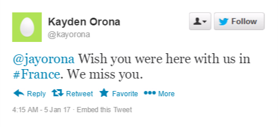

AO3 Work Skins
Ever wanted to spruce up your AO3 works with images that fit on mobile devices?
What if you're writing a Modern-Day AU and you need to embed social media posts, but
we all know that toiling over custom tweets in Photoshop is time consuming?
Have no fear! These AO3 work skins are templates made from pure HTML and CSS,
easy for you to copy-paste and fill in, so you can focus on the bigger stuff, like writing!
Android 6.0 Messaging
While there is support for an iOS messaging system, as seen here, what if your
character is an Android user?
Viktor Nikiforov
-
A:
Hello, friend.
2 min

-
B:
Hello to you, too.
1 min
-
A:
Should we get dinner?
We can go to that Chinese place you like so much.
1 min
-
A:
My treat.
1 min
-
B:
Sure. Tell me when.
Now
Looks great and all, but wait, you say. Why is the message at the top underneath the other? That's because
this work skin is optimized for AO3 exclusively, which has a finicky CSS styles of its own. If you plan to use this
for stuff outside of AO3, you can tweak some of the values for yourself.
Twitter (2016)
Since a lot of fic writers like to involve social media in
their fics, why not do it with some style and flai than just
a few lines of text? Technically, you could make an actual
embedded Tweet, but it wouldn't be formatted the way we like
it, so let's try this with some work skins. The code on this
page provides several examples and options you can do with
tweets.
Capturing a picture of a Tweet

The easiest method to "embed" tweets is to use a tweet
generator, save the pic, then upload them to any image
hosting site of your choice.
Your HTML should look like this:
<p align="center"><img class="twEasy" src="http://imgur.com/Yll9hGE.png" alt="Example of Image Tweet" width="760" height="288" /></p>
The corresponding CSS should look like this:
.twEasy{
max-width: 300px;
height: auto;
}
The pros of this is that it's super duper easy to implement, but the cons is that you may not have crisp lines
that you'd get from formatting. You also can't highlight text. If you're not comfortable with spending a bunch
of time fiddling with HTML, then you can use this.
Text-Only Tweets
Now say you want to do this Tweet thing with higlightable text. So you want something like this.

 Kayden Orona
Kayden Orona
@kayorona
@kayorona Wish you were here with us in
#France. We miss you, Jaya.(Purple Heart )
3:09 PM - 5 May 2014
2,901
The full CSS code can be found in the following entry, but the HTML used for this is as follows:
<div class="tw">
<p class="twBody">
<span>
<img class="twAvatar" src="http://imgur.com/tzkpXGS.png">
<span class="twUser">
<span class="twUserName">Kayden Orona
<img class="twIcon" src="http://imgur.com/eVQzzhT.png">
</span>
<br>
<span class="twUserHandle">@kayorona</span>
</span>
<img class="twFollow" src="http://imgur.com/p6lbN22.png">
<br>
</span>
<span class="twText">
<a class="twLink">@kayorona</a> Wish you were here with us at
<a class="twLink">#France</a>. We miss you.
</span>
<span class="twTimeStamp">
3:09 PM - 5 May 2014
</span>
<span>
<img class="twReplyIcon" src="http://imgur.com/9dwkilY.png">
<span class="twRetweet">
<img class="twRetweetIcon" src="http://imgur.com/ToOoCJz.png">
2,144
</span>
<span class ="twLike">
<img class="twHeartIcon" src="http://imgur.com/67stmhs.png">
2,901
</span>
</span>
</p>
</div>
As you can see, there are some icons required to load some of these things, most of I which I made
myself for you to use. You can find them in the repository under the Twitter directory.
The avatar is just a sample one, so feel free to use your own. Be
sure to make the avatar square shaped, because the code won't truncate it
for you. All Twitter avatars get resized to 40px wide, so keep that in mind.
Essentially, you don't touch the tags, just edit the text as you see fit. If you need to make links, just
make links like you usually do in HTML. I've been unable to remove the decorative line underneath it, but using
spans breaks the HTML, and AO3 refuses to let me remove it. So... it's a little less authentic.
Single Image Tweets
Now, how about if you want to attach an image to your tweet? This isn't much different from your original
text-only tweet. You just need to make sure you tag the img tag with "twImage"
Kayden Orona
@kayorona
@kayorona Wish you were here with us in
#France. We miss you, Jaya.(Purple Heart )
3:09 PM - 5 May 2014
2,901
The maximum width of these simulated tweets are 300px wide, so
if you don't want your picture to be blown up, try to stay above
that width. Don't worry about making your pictures too big, because
tagging it as "twImage" should fit the image in the div container.
HTML:
<div class="tw">
<p class="twBody">
<img class="twImage" src="https://upload.wikimedia.org/wikipedia/commons/9/9a/French_Formal_Garden_in_Loire_Valley.jpg">
<span>
<img class="twAvatar" src="http://imgur.com/tzkpXGS.png">
<span class="twUser">
<span class="twUserName">Kayden Orona
<img class="twIcon" src="http://imgur.com/eVQzzhT.png">
</span>
<br>
<span class="twUserHandle">@kayorona</span>
</span>
<img class="twFollow" src="http://imgur.com/p6lbN22.png">
<br>
</span>
<span class="twText">
<a class="twLink">@kayorona</a> Wish you were here with us at
<a class="twLink">#France</a>. We miss you.
</span>
<span class="twTimeStamp">
3:09 PM - 5 May 2014
</span>
<span>
<img class="twReplyIcon" src="http://imgur.com/9dwkilY.png">
<span class="twRetweet">
<img class="twRetweetIcon" src="http://imgur.com/ToOoCJz.png">
2,144
</span>
<span class ="twLike">
<img class="twHeartIcon" src="http://imgur.com/67stmhs.png">
2,901
</span>
</span>
</p>
</div>
Anyways, this is all for today. Once again, CSS is attached on the next chapter for you to look at for yourself.
I could have went the full mile and add hover effects (changing colors), but I think that would detract from
the fact that I just made this to make fictional tweets look nice on this site.
Emoji Implementation
It's not a Tweet unless you can add emojis!(Smiling Face With Open Mouth And Smiling Eyes )
Thankfully, someone's already done work for that! For full
documentation, see All the Emoji
by CodenameCarrot. It's really easy to implement, and is
non-intrusive to the tweet structure. Another advantage to formatted Tweets instead of images is that they're easy to change.
All you gotta do is go the editing chapter and fix a few things. Or you could just copy and paste
from your IDE like I do. Either way, less steps! (Winking Face )
FE Scripting
I made this skin because I needed to make scripting easier,
since I didn't want to format every single cell individually.
Basic Usage
Firstly, the script is made through a table, so it's a little
extra work to put together. But, you can easily put a table through
word processor of your choice. In this case, I used Word. We start
with a simple script like this:
Niles: This is the first time I've seen you wear boots.
Anri: They're uncomfortable, but if it's for the sake of keeping my cover, I'll wear them.
Niles: Hmm, ever wore heels before?
Anri: I have. They aren't the most pleasant of memories.
Niles: A shame, then.
I use Word's feature of converting text into a table, splitting the cells
by the colon, then with a bit of tweaking (ie adding images and removing extra characters),
we get a table like this:
<table>
<tbody>
<tr>
<td><img src="http://imgur.com/STYEtz8.png" alt="Niles" width="128" height="128" /></td>
<td>This is the first time I've seen you wear boots.</td>
</tr>
<tr>
<td><img src="http://imgur.com/ZJOMCNG.png" alt="Anri" width="128" height="128" /></td>
<td>They're uncomfortable, but if it's for the sake of keeping my cover, I'll wear them.</td>
</tr>
<tr>
<td><img src="http://imgur.com/STYEtz8.png" alt="Niles" width="128" height="128" /></td>
<td>Hmm, ever wore heels before?</td>
</tr>
<tr>
<td><img src="http://imgur.com/bQQi2yY.png" alt="Anri" width="128" height="128" /></td>
<td>I have. They aren't the most pleasant of memories.</td>
</tr>
<tr>
<td><img src="http://imgur.com/tmoSITI.png" alt="Niles" width="128" height="128" /></td>
<td>A shame, then.</td>
</tr>
</tbody>
</table>
We then put together the CSS to make the table pretty. This means fitting the first column
to huge the sides of the sprite image and centering text to align center vertically.
td {
vertical-align: middle;
}
td:nth-child(1) {
width: 128px;
}
So, the end result is this:
 |
This is the first time I've seen you wear boots. |
 |
They're uncomfortable, but if it's for the sake of keeping my cover, I'll wear them. |
|
Hmm, ever wore heels before? |
 |
I have. They aren't the most pleasant of memories. |
 |
A shame, then. |
An additional feature of the code is to format stage directions, which can look a little
different from normal speaking text.
.stagedir {
text-align: center;
font-style: italic;
}
Stage Directions
Say we have a script that looks like this.
<tbody>
<table>
<td><img src="http://imgur.com/NeJLquH.png" alt="Takumi" width="128" height="128" /></td>
<td>I've waited. For a long time, perhaps much like you. I've waited for things to turn back to normal again, but that time never came.</td>
</tr>
<tr>
<td><img src="http://imgur.com/fftPEV3.png" alt="Elise" width="128" height="128" /></td>
<td>I don't know what you're wishing for, but I'm sure you will get what you want someday.</td>
</tr>
<tr>
<td><img src="http://imgur.com/qqSzY4X.png" alt="Takumi" width="128" height="128" /></td>
<td>… F-Forget all the nonsense I just said.</td>
</tr>
<tr>
<td> </td>
<td class="stagedir">(Takumi quickly leaves, and shuts the door behind him.)</td>
</tr>
<tr>
<td><img src="http://imgur.com/FylhaCy.png" alt="Elise" width="128" height="128" /></td>
<td>… Why should I...?</td>
</tr>
</tbody>
</table>
Note there is a row tagged with the class "stagedir". With the added CSS script, the
script with stage directions will look like this:
 |
I've waited. For a long time, perhaps much like you. I've waited for things to turn back to normal again, but that time never came. |
 |
I don't know what you're wishing for, but I'm sure you will get what you want someday. |
 |
… F-Forget all the nonsense I just said. |
| |
(Takumi quickly leaves, and shuts the door behind him.) |
 |
… Why should I...? |
And that's all, really. I hope this will be useful for anyone who considers writing fics
in the same format. The Github repository for this page is located here.
Instagram (2016)
We continue our series of social media mockups, this time with
Instagram! This is not quite like the official embedded Instagram
post, but more like the mobile version of an Instagram app, mostly
because I think that's the format people are most familiar with.
For an easy way to post an Instagram post (i.e. capture the instagram post
and posting it as a picture), refer to a previous chapter on the Twitter
mockup. As for the nitty gritty version, let's take a look.
kayorona
200 likes
kayorona Wish you were here with us in
#France. We miss you, Jaya.(Purple Heart )
May 5, 2014
This is currently the only look I've got so far. It's pretty close to the actual
standard, and is essentially just a retool of my Twitter mockup. I will attach
the full CSS code in a following chapter. So the HTML for this is pasted below.
For those who just want to know which fields to change, I have bolded those places.
<div class="inst">
<p class="instBody">
<span>
<img class="instAvatar" src="http://imgur.com/tzkpXGS.png">
<span class="instUser">kayorona</span>
</span>
<img class="instImage" src="https://upload.wikimedia.org/wikipedia/commons/9/9a/French_Formal_Garden_in_Loire_Valley.jpg">
<img class="instIcon" src="http://imgur.com/XcdMBeP.png">
<img class="instIcon" src="http://imgur.com/gB6K2qR.png">
<img class="instIcon" src="http://imgur.com/d7ItqK3.png">
<img class="instIconRight" src="http://imgur.com/ccdl7jh.png">
<span class="instText">
❤ <b>200</b> likes</br>
<b>jayorona</b> Wish you were here with us in
<a class="instLink">#France</a>. We miss you, Jaya.<span class="x1F49C"><span class="hide">(Purple Heart )</span></span>
</span>
<span class="instComments">View all 28 comments</span>
<span class="instTimestamp">May 5, 2014</span>
</p>
</div>
It's a lot more simple than the Twitter one, (less icons and less fancy stuff floating around).
I hope this code will help people make polished pretty Instagram posts in their fics in the future.
So that's all, folks. If you want to take a peek at more of the CSS and html,
you can return to the repository page here.